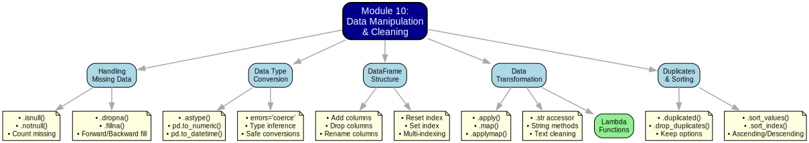

Module 10 Summary: Data Manipulation and Cleaning with Pandas
Module 10 Overview
This document provides a concise summary of what we covered in Module 10, which builds upon our introduction to Pandas in Module 9. While Module 9 focused on creating, inspecting, and selecting data from Pandas objects, Module 10 expands our toolkit to clean, transform, and manipulate data - essential skills for preparing real-world business datasets for meaningful analysis.
What We Learned
In Module 10, we covered:
Handling Missing Data: Strategies for dealing with missing values using
.dropna()and.fillna()methodsCorrecting Data Types: Techniques to convert columns to appropriate data types using
.astype(),pd.to_numeric(), andpd.to_datetime()Modifying DataFrame Structure: Adding, removing, and renaming columns
Applying Functions: Using
.apply()and.map()to transform data with custom functionsString Operations: Manipulating text data with the
.straccessorSorting Data: Ordering DataFrames by values or index labels
Managing Duplicates: Identifying and removing duplicate rows
Let’s review each of these key areas briefly.
Mind Map: Module 10 Content

1. Handling Missing Data
Real-world datasets often contain missing values (represented as NaN in Pandas). These gaps must be addressed before meaningful analysis can occur.
1.1 Detecting Missing Values (Review)
As covered in Module 9, we can detect missing values using:
import pandas as pd
import numpy as np
# Sample data with missing values
data = {
'Product': ['A', 'B', None, 'D'],
'Price': [10.0, np.nan, 15.0, 20.0],
'Quantity': [100, 50, np.nan, 80]
}
df = pd.DataFrame(data)
# Check missing values
print("Missing values per column:")
print(df.isnull().sum())
# Boolean mask of missing values
print("\nBoolean mask of missing values:")
print(df.isnull())1.2 Dropping Missing Values (.dropna())
When missing values represent a small portion of your data, removing them can be a simple solution:
import pandas as pd
import numpy as np
# Sample data
data = {
'Product': ['A', 'B', None, 'D', 'E'],
'Price': [10.0, np.nan, 15.0, 20.0, 25.0],
'Quantity': [100, 50, np.nan, 80, 75]
}
df = pd.DataFrame(data)
print("Original DataFrame:")
print(df)
# Drop rows with ANY missing value
df_dropped = df.dropna()
print("\nAfter dropping rows with any missing value:")
print(df_dropped)
# Drop rows only if missing in specific columns
df_dropped_subset = df.dropna(subset=['Product'])
print("\nAfter dropping rows with missing 'Product':")
print(df_dropped_subset)
# Drop columns with missing values
df_dropped_cols = df.dropna(axis=1)
print("\nAfter dropping columns with any missing value:")
print(df_dropped_cols)
# Keep rows with at least 2 non-missing values
df_dropped_thresh = df.dropna(thresh=2)
print("\nAfter keeping rows with at least 2 non-missing values:")
print(df_dropped_thresh)Key parameters for .dropna(): - axis: Use 0 or 'index' (default) to drop rows, 1 or 'columns' to drop columns
how:'any'(default) drops if any value is missing,'all'drops only if all values are missingthresh: Minimum number of non-missing values required to keep a row/columnsubset: List of column names to consider when checking for missing values
1.3 Filling Missing Values (.fillna())
Often, you’ll want to preserve your data by replacing missing values with meaningful substitutes:
import pandas as pd
import numpy as np
# Sample data
data = {
'Product': ['A', 'B', None, 'D'],
'Price': [10.0, np.nan, 15.0, 20.0],
'Quantity': [100, 50, np.nan, 80]
}
df = pd.DataFrame(data)
print("Original DataFrame:")
print(df)
# Fill all missing values with a constant
df_filled_const = df.fillna(0) # Numeric columns get 0, object columns get '0'
print("\nAfter filling all missing values with 0:")
print(df_filled_const)
# Fill with different values per column
fill_dict = {'Product': 'Unknown', 'Price': 0.0, 'Quantity': df['Quantity'].mean()}
df_filled_dict = df.fillna(fill_dict)
print("\nAfter filling with column-specific values:")
print(df_filled_dict)
# Fill using forward fill (propagate last valid value)
df_filled_ffill = df.fillna(method='ffill')
print("\nAfter forward filling:")
print(df_filled_ffill)
# Fill using backward fill (use next valid value)
df_filled_bfill = df.fillna(method='bfill')
print("\nAfter backward filling:")
print(df_filled_bfill)Key parameters for .fillna(): - value: The value to use for filling (can be a scalar, dict, Series, or DataFrame)
method: Strategy for filling -'ffill'/'pad'(forward) or'bfill'/'backfill'(backward)axis: Direction of filling (rows or columns)inplace: Whether to modify the original DataFrame
When deciding how to handle missing values, consider:
Why is the data missing? Is it random or meaningful?
How much data is missing? If a large percentage, dropping may not be viable.
What’s the business context? Some analyses are sensitive to imputation methods.
Impact on statistical properties: Some filling methods can distort your data’s distribution.
For numerical data, common approaches include: - Mean/median/mode replacement (centrality measures)
Forward/backward filling (time series data)
Zero replacement (when zero is meaningful)
Predictive imputation (more advanced)
2. Correcting Data Types
Inappropriate data types can prevent calculations and hinder analysis. Converting columns to the right types is essential.
2.1 Checking Current Data Types
Always start by examining current data types:
import pandas as pd
# Sample data with potentially incorrect types
data = {
'ID': ['1', '2', '3', '4'],
'Price': ['10.5', '15.75', '8.25', '22.0'],
'Quantity': ['100', '50', '75', '30'],
'Date': ['2025-04-15', '2025-04-16', '2025-04-17', '2025-04-18']
}
df = pd.DataFrame(data)
# Check current types
print("Initial data types:")
print(df.dtypes) # All likely 'object' (string)
# More detailed info
print("\nDataFrame info:")
df.info()2.2 Converting with .astype()
The basic method for type conversion is .astype():
import pandas as pd
# Sample data with string-based numbers
data = {
'ID': ['1', '2', '3', '4'],
'Price': ['10.5', '15.75', '8.25', '22.0'],
'Quantity': ['100', '50', '75', '30'],
'Date': ['2025-04-15', '2025-04-16', '2025-04-17', '2025-04-18']
}
df = pd.DataFrame(data)
# Convert types with astype
df['ID'] = df['ID'].astype(int)
df['Price'] = df['Price'].astype(float)
df['Quantity'] = df['Quantity'].astype(int)
# Simple date conversion (limited flexibility)
df['Date'] = df['Date'].astype('datetime64[ns]')
print("DataFrame after type conversion:")
print(df)
print("\nNew data types:")
print(df.dtypes)Common types to convert to: - int, float: Numeric data
str: String databool: Boolean datadatetime64[ns]: Date/time datacategory: Categorical data (memory efficient for repeated values)
2.3 Robust Conversions: pd.to_numeric() and pd.to_datetime()
For handling problematic data, Pandas provides specialized conversion functions:
import pandas as pd
# Sample data with problematic values
data = {
'Sales': ['1000', '1,500', 'N/A', '2,250.50'],
'Date': ['2025-04-15', '04/16/2025', 'Invalid', '2025.04.17']
}
df = pd.DataFrame(data)
print("Original DataFrame:")
print(df)
# Clean and convert Sales using to_numeric
# First, remove commas
df['Sales_Clean'] = df['Sales'].str.replace(',', '')
# Convert to numeric, coercing errors to NaN
df['Sales_Numeric'] = pd.to_numeric(df['Sales_Clean'], errors='coerce')
# Convert Date column with to_datetime
df['Date_DT'] = pd.to_datetime(df['Date'], errors='coerce')
print("\nDataFrame after conversion:")
print(df)
print("\nNew data types:")
print(df.dtypes)Key advantages of specialized conversion functions: - Error handling options: - errors='raise': Raise exception on invalid data (default)
errors='coerce': Convert invalid data to NaNerrors='ignore': Return input when conversion failsFormat specification for
pd.to_datetime(): Define custom date formats with format codes
3. Modifying Columns
Datasets often need structural modifications - adding calculated columns, removing irrelevant ones, or renaming for clarity.
3.1 Adding New Columns
Creating new columns is straightforward with direct assignment:
import pandas as pd
# Sample sales data
data = {
'Product': ['A', 'B', 'C', 'D'],
'Price': [10.0, 20.0, 15.0, 25.0],
'Quantity': [100, 50, 75, 30]
}
df = pd.DataFrame(data)
print("Original DataFrame:")
print(df)
# Add a constant column
df['Category'] = 'Electronics'
print("\nAfter adding constant column:")
print(df)
# Add a calculated column
df['Revenue'] = df['Price'] * df['Quantity']
print("\nAfter adding calculated column:")
print(df)
# Add conditional column
df['Size'] = 'Medium' # Default value
df.loc[df['Quantity'] < 50, 'Size'] = 'Small'
df.loc[df['Quantity'] > 80, 'Size'] = 'Large'
print("\nAfter adding conditional column:")
print(df)3.2 Removing Columns
Use .drop() to remove unwanted columns:
import pandas as pd
# Sample data with unnecessary columns
data = {
'ID': ['1', '2', '3', '4'],
'Product': ['A', 'B', 'C', 'D'],
'Price': [10.0, 20.0, 15.0, 25.0],
'Quantity': [100, 50, 75, 30],
'Internal_Code': ['X1', 'Y2', 'Z3', 'W4'], # Column to remove
'Temp_Note': ['Note1', 'Note2', 'Note3', 'Note4'] # Another column to remove
}
df = pd.DataFrame(data)
print("Original DataFrame:")
print(df)
# Remove a single column
df_dropped_single = df.drop(columns='Internal_Code')
print("\nAfter dropping 'Internal_Code':")
print(df_dropped_single)
# Remove multiple columns
columns_to_drop = ['Internal_Code', 'Temp_Note']
df_dropped_multi = df.drop(columns=columns_to_drop)
print("\nAfter dropping multiple columns:")
print(df_dropped_multi)Two main ways to use .drop() for columns: 1. df.drop('column_name', axis=1) - using axis parameter
df.drop(columns='column_name')- using the columns parameter (more explicit and readable)
3.3 Renaming Columns
Clear column names improve code readability and analysis. Use .rename() to change column names:
import pandas as pd
# Sample data with unclear column names
data = {
'prod_id': [1, 2, 3, 4],
'prod_nm': ['A', 'B', 'C', 'D'],
'p': [10.0, 20.0, 15.0, 25.0],
'qty': [100, 50, 75, 30]
}
df = pd.DataFrame(data)
print("Original DataFrame with unclear names:")
print(df)
# Rename columns using a dictionary mapping
renamed_df = df.rename(columns={
'prod_id': 'ProductID',
'prod_nm': 'ProductName',
'p': 'Price',
'qty': 'Quantity'
})
print("\nDataFrame with renamed columns:")
print(renamed_df)
# Rename just one column
single_renamed_df = df.rename(columns={'prod_nm': 'Product'})
print("\nDataFrame with one renamed column:")
print(single_renamed_df)Key parameters for .rename(): - columns: Dictionary mapping old names to new names
inplace: Whether to modify the original DataFrame
4. Applying Functions and String Operations
Transforming data often requires custom functions or string manipulations.
4.1 Applying Functions with .apply()
The .apply() method executes a function along an axis of a DataFrame:
import pandas as pd
import numpy as np
# Sample data
data = {
'A': [1, 2, 3, 4],
'B': [10, 20, 30, 40],
'C': [100, 200, 300, 400]
}
df = pd.DataFrame(data)
print("Original DataFrame:")
print(df)
# Apply a function to each column (axis=0)
column_sums = df.apply(np.sum)
print("\nSum of each column:")
print(column_sums)
# Apply a function to each row (axis=1)
row_means = df.apply(np.mean, axis=1)
print("\nMean of each row:")
print(row_means)
# Apply a custom function to each column
def standardize(x):
return (x - x.mean()) / x.std()
df_standardized = df.apply(standardize)
print("\nStandardized columns:")
print(df_standardized)
# Apply a lambda function to each row
df['D'] = df.apply(lambda row: row['A'] * row['C'], axis=1)
print("\nDataFrame with calculated column D:")
print(df)Key aspects of .apply(): - axis=0 (default): Apply function to each column
axis=1: Apply function to each rowCan use built-in functions, NumPy functions, or custom functions
Lambda functions work well for simple operations
4.2 Element-wise Transformation with .map()
The .map() method applies a function or mapping to each element in a Series:
import pandas as pd
# Sample data
data = {
'ProductCode': ['A', 'B', 'C', 'D'],
'Category': [1, 2, 1, 3],
'Rating': [3, 5, 4, 2]
}
df = pd.DataFrame(data)
print("Original DataFrame:")
print(df)
# Map category codes to names using a dictionary
category_map = {1: 'Electronics', 2: 'Home Goods', 3: 'Office Supplies'}
df['CategoryName'] = df['Category'].map(category_map)
print("\nAfter mapping categories:")
print(df)
# Map ratings to descriptions using a function
def rating_to_text(rating):
if rating >= 4:
return 'Excellent'
elif rating >= 3:
return 'Good'
else:
return 'Average'
df['RatingText'] = df['Rating'].map(rating_to_text)
print("\nAfter mapping ratings to text:")
print(df)Key differences between .map() and .apply(): - .map() is a Series method, while .apply() works on both Series and DataFrames
.map()is generally faster for element-wise operations.map()is ideal for value substitutions using dictionaries
4.3 String Operations with .str
Pandas provides vectorized string methods through the .str accessor:
import pandas as pd
# Sample text data
data = {
'ProductName': [' Widget A ', 'widget b', 'WIDGET C', 'Gadget X'],
'Description': ['Red Color, Size M', 'BLUE color, size L', 'green COLOR, Size S', 'Yellow, Large'],
'SKU': ['SKU-123-A', 'SKU-456-B', 'SKU-789-C', 'SKU-101-X']
}
df = pd.DataFrame(data)
print("Original DataFrame:")
print(df)
# Convert to lowercase and strip whitespace
df['ProductName_Clean'] = df['ProductName'].str.lower().str.strip()
print("\nCleaned product names:")
print(df['ProductName_Clean'])
# Extract part of a string (SKU code)
df['SKU_Code'] = df['SKU'].str.split('-').str[1]
print("\nExtracted SKU codes:")
print(df['SKU_Code'])
# Check if string contains a substring
df['Is_Color_Red'] = df['Description'].str.contains('red', case=False)
print("\nProducts with 'red' in description:")
print(df[['Description', 'Is_Color_Red']])
# Replace text
df['Description_Standard'] = df['Description'].str.replace('COLOR', 'Color').str.replace('color', 'Color')
print("\nStandardized descriptions:")
print(df[['Description', 'Description_Standard']])Common string operations via the .str accessor: - .lower(), .upper(), .title(): Case conversion
.strip(),.lstrip(),.rstrip(): Remove whitespace.replace(pattern, replacement): Replace substrings.contains(pattern): Check if pattern exists (returns boolean).split(delimiter): Split into list of substrings.extract(pattern): Extract using regular expressions (more advanced)
5. Sorting Data
Organizing data in a meaningful order is often necessary for analysis and presentation.
5.1 Sorting by Values (.sort_values())
Sort a DataFrame by one or more columns:
import pandas as pd
import numpy as np
# Sample sales data
data = {
'Product': ['B', 'A', 'C', 'A', 'B'],
'Region': ['North', 'South', 'North', 'North', 'South'],
'Sales': [200, 150, 100, 160, 190]
}
df = pd.DataFrame(data)
print("Original DataFrame:")
print(df)
# Sort by a single column (ascending)
df_sorted_sales = df.sort_values(by='Sales')
print("\nSorted by Sales (ascending):")
print(df_sorted_sales)
# Sort by a single column (descending)
df_sorted_sales_desc = df.sort_values(by='Sales', ascending=False)
print("\nSorted by Sales (descending):")
print(df_sorted_sales_desc)
# Sort by multiple columns
df_sorted_multi = df.sort_values(by=['Product', 'Sales'], ascending=[True, False])
print("\nSorted by Product (asc) then Sales (desc):")
print(df_sorted_multi)
# Sort with NaN values
df_with_nan = df.copy()
df_with_nan.loc[1, 'Sales'] = np.nan
print("\nDataFrame with NaN:")
print(df_with_nan)
# Sort with NaN values at the end (default)
df_sorted_nan = df_with_nan.sort_values(by='Sales')
print("\nSorted with NaN at the end (default):")
print(df_sorted_nan)
# Sort with NaN values at the beginning
df_sorted_nan_first = df_with_nan.sort_values(by='Sales', na_position='first')
print("\nSorted with NaN at the beginning:")
print(df_sorted_nan_first)Key parameters for .sort_values(): - by: Column name(s) to sort by
ascending: Whether to sort in ascending order (True) or descending (False)na_position: Where to position NaN values (‘last’ or ‘first’)inplace: Whether to modify the original DataFrame
5.2 Sorting by Index (.sort_index())
Sort a DataFrame by its index labels:
import pandas as pd
# Create DataFrame with unsorted index
data = {'Sales': [150, 200, 100, 300]}
unsorted_index = ['D', 'B', 'A', 'C']
df = pd.DataFrame(data, index=unsorted_index)
print("DataFrame with unsorted index:")
print(df)
# Sort by index (ascending)
df_sorted = df.sort_index()
print("\nSorted by index (ascending):")
print(df_sorted)
# Sort by index (descending)
df_sorted_desc = df.sort_index(ascending=False)
print("\nSorted by index (descending):")
print(df_sorted_desc)
# Sort by column names (with multiple columns)
df_multi = pd.DataFrame({
'B': [1, 2, 3],
'A': [4, 5, 6],
'C': [7, 8, 9]
})
print("\nDataFrame with unsorted columns:")
print(df_multi)
df_sorted_columns = df_multi.sort_index(axis=1)
print("\nSorted by column names:")
print(df_sorted_columns)Key parameters for .sort_index(): - axis: Sort by row index (0 or 'index') or column labels (1 or 'columns')
ascending: Whether to sort in ascending orderinplace: Whether to modify the original DataFrame
6. Managing Duplicates
Duplicate data can skew analysis results. Pandas provides tools to identify and handle duplicates.
6.1 Identifying Duplicates (.duplicated())
Find duplicate rows in a DataFrame:
import pandas as pd
# Sample data with duplicates
data = {
'Product': ['A', 'B', 'A', 'C', 'B', 'A'],
'Region': ['North', 'South', 'North', 'East', 'South', 'North'],
'Sales': [150, 200, 150, 100, 200, 150]
}
df = pd.DataFrame(data)
print("Original DataFrame:")
print(df)
# Find duplicate rows (all columns considered)
duplicates = df.duplicated()
print("\nDuplicate rows mask:")
print(duplicates)
# Find duplicate rows (based on specific columns)
product_duplicates = df.duplicated(subset=['Product'])
print("\nDuplicate Products mask:")
print(product_duplicates)
# Mark all duplicates (including first occurrence)
all_duplicates = df.duplicated(keep=False)
print("\nAll duplicates mask (including first occurrences):")
print(all_duplicates)
# Display duplicate rows
print("\nDuplicate rows (excluding first occurrences):")
print(df[df.duplicated()])
print("\nAll rows involved in duplication:")
print(df[df.duplicated(keep=False)])Key parameters for .duplicated(): - subset: Column(s) to consider when identifying duplicates
keep: Which duplicates to mark:'first'(default): Mark all except first occurrence'last': Mark all except last occurrenceFalse: Mark all duplicates (including first occurrence)
6.2 Removing Duplicates (.drop_duplicates())
Remove duplicate rows from a DataFrame:
import pandas as pd
# Sample data with duplicates
data = {
'Product': ['A', 'B', 'A', 'C', 'B', 'A'],
'Region': ['North', 'South', 'North', 'East', 'South', 'North'],
'Sales': [150, 200, 150, 100, 200, 150]
}
df = pd.DataFrame(data)
print("Original DataFrame:")
print(df)
# Remove duplicates (keep first occurrence)
df_deduped = df.drop_duplicates()
print("\nAfter removing duplicates (keeping first):")
print(df_deduped)
# Remove duplicates (keep last occurrence)
df_deduped_last = df.drop_duplicates(keep='last')
print("\nAfter removing duplicates (keeping last):")
print(df_deduped_last)
# Remove duplicates based on specific columns
df_deduped_product = df.drop_duplicates(subset=['Product'])
print("\nAfter removing duplicates by Product only:")
print(df_deduped_product).drop_duplicates() uses the same parameters as .duplicated(): - subset: Column(s) to consider when identifying duplicates
keep: Which occurrence to keep (‘first’, ‘last’, or False)inplace: Whether to modify the original DataFrame
7. Applied Business Example: Cleaning Sales Data
Let’s put these techniques together with a comprehensive business example:
import pandas as pd
import numpy as np
# Create a messy sales dataset
raw_data = {
'order_id': ['1001', '1002', 1003, '1004', '1001'], # Mixed types, duplicate
'date': ['2025-01-15', '01/16/2025', '20250117', 'Jan 18, 2025', '2025-01-15'],
'product': [' Widget A', 'widget a', 'WIDGET B', 'Gadget C ', ' Widget A'], # Inconsistent formatting
'quantity': ['10', '5', '15', np.nan, '10'], # Missing value
'unit_price': ['$25.99', '15.50', '$42', '30.00', '$25.99'], # Inconsistent format
'customer_region': ['north', 'SOUTH', 'South', 'East', 'North'] # Inconsistent case
}
df_sales = pd.DataFrame(raw_data)
print("Original Messy Sales Data:")
print(df_sales)
print("\nData Types:")
print(df_sales.dtypes)
print("\nMissing Values:")
print(df_sales.isnull().sum())
# Step 1: Handle duplicates
df_clean = df_sales.drop_duplicates(subset=['order_id', 'product'])
print("\nAfter removing duplicates:")
print(df_clean)
# Step 2: Standardize text columns
df_clean['product'] = df_clean['product'].str.strip().str.title()
df_clean['customer_region'] = df_clean['customer_region'].str.title()
print("\nAfter standardizing text:")
print(df_clean)
# Step 3: Convert data types
# Clean and convert unit_price
df_clean['unit_price'] = df_clean['unit_price'].str.replace('$', '').astype(float)
# Convert quantity to numeric (handling missing values)
df_clean['quantity'] = pd.to_numeric(df_clean['quantity'], errors='coerce')
# Convert order_id to string
df_clean['order_id'] = df_clean['order_id'].astype(str)
# Parse dates
df_clean['date'] = pd.to_datetime(df_clean['date'], errors='coerce')
print("\nAfter type conversion:")
print(df_clean)
print("\nData Types:")
print(df_clean.dtypes)
# Step 4: Fill missing values
# Fill missing quantity with the median
median_qty = df_clean['quantity'].median()
df_clean['quantity'] = df_clean['quantity'].fillna(median_qty)
print("\nAfter filling missing values:")
print(df_clean)
# Step 5: Add calculated columns
df_clean['total_price'] = df_clean['quantity'] * df_clean['unit_price']
df_clean['order_month'] = df_clean['date'].dt.month_name()
print("\nAfter adding calculated columns:")
print(df_clean)
# Step 6: Sort by date and order_id
df_clean = df_clean.sort_values(by=['date', 'order_id'])
print("\nFinal clean dataset:")
print(df_clean)
# Summary statistics
print("\nSummary Statistics:")
print(df_clean[['quantity', 'unit_price', 'total_price']].describe())This example demonstrates a typical data cleaning workflow: 1. Remove duplicates
Standardize text data
Convert to appropriate data types
Handle missing values
Create calculated columns
Sort the data
Verify with summary statistics
8. Key Takeaways
Data Cleaning is Essential: Real-world data is rarely analysis-ready without cleaning and preparation.
Missing Value Strategies: Use
.dropna()to remove rows/columns with missing data or.fillna()to replace missing values with meaningful substitutes.Data Type Conversion: Ensure columns have appropriate types with
.astype(),pd.to_numeric(), orpd.to_datetime(). Useerrors='coerce'for robust handling of problematic values.Column Manipulation: Easily add new columns with calculations, remove unwanted columns with
.drop(), and rename columns for clarity with.rename().Function Application: Transform data using
.apply()for row/column-wise operations and.map()for element-wise Series operations.String Operations: The
.straccessor provides powerful vectorized methods for text cleaning and manipulation.Sorting and Organization: Arrange data meaningfully with
.sort_values()(by column values) and.sort_index()(by index).Duplicate Management: Identify and remove redundant data using
.duplicated()and.drop_duplicates().Modular Approach: Data cleaning often requires multiple steps in a specific sequence; break down complex operations into manageable tasks.
Verification is Crucial: Always verify results with
.info(),.describe(), and other inspection methods to ensure your cleaning operations worked as expected.
Practice Exercises
Reinforce your learning with these exercises:
- Sales Data Cleanup:
Load a dataset with messy sales records
Standardize product names and categories
Convert price columns to numeric
Fill missing quantities with appropriate values
Calculate total revenue
- Customer Database Processing:
Clean inconsistent customer information
Standardize address fields
Convert date fields to proper datetime format
Remove duplicate customer records
Create a customer segmentation column
- Product Inventory Management:
Combine data from multiple sources
Handle missing inventory counts
Convert units for consistency
Flag products with low inventory
Create a report-ready dataset
- Time Series Data Preparation:
Convert string dates to datetime
Ensure regular time intervals
Fill missing time points
Calculate period-over-period changes
Identify outliers
- Text Data Cleaning:
Standardize case and format
Remove special characters
Extract meaningful information from text fields
Create categorical variables from text descriptions
Remove duplicate content
Resources for Further Learning
Official Documentation
Online Tutorials and Courses
Books
“Python for Data Analysis” by Wes McKinney (Chapter 7)
“Data Wrangling with Python” by Jacqueline Kazil and Katharine Jarmul
“Pandas Cookbook” by Theodore Petrou
Glossary
Aggregation: Computation of summary statistics like mean, sum, or count across a dataset
Category Type: A special data type for categorical variables that saves memory by storing each unique value only once
Coercion: Converting invalid data to
NaNduring type conversion (errors='coerce')Data Cleaning: The process of detecting and correcting corrupt, inaccurate, or irrelevant data
Data Type: The classification that determines what values a variable can store and what operations can be performed on it
Data Wrangling: The process of transforming and mapping data from one format into another
.drop(): Method used to remove specified columns or rows from a DataFrame.drop_duplicates(): Method that removes duplicate rows from a DataFrame.dropna(): Method that removes rows or columns with missing values.duplicated(): Method that returns a boolean Series indicating duplicate rows.fillna(): Method used to replace missing values with specified valuesForward Fill (
ffill): Propagation of the last valid observation forward to fill gapsImputation: The process of replacing missing data with substituted values
Lambda Function: An anonymous function defined with the
lambdakeyword, often used for simple operations.map(): Series method for element-wise transformation based on a function, dictionary, or SeriesMutability: Whether an object can be changed after creation (DataFrames are mutable)
NaN (Not a Number): The representation of missing values in pandas
.rename(): Method used to change column or index names.sort_index(): Method that sorts a DataFrame by its index labels.sort_values(): Method that sorts a DataFrame by values in specified columns.strAccessor: Provides vectorized string functions for Series objectsType Casting: Converting data from one type to another (e.g., string to numeric)
Next Steps
To build on your data manipulation skills:
Practice Data Cleaning: Find messy datasets to clean (many available on Kaggle)
Combine Techniques: Create data cleaning pipelines that handle multiple issues
Learn More Advanced Methods: Explore other Pandas functions not covered in this module
Consider Performance: For larger datasets, research performance optimization techniques
Integrate with Visualization: Connect clean data to visualization tools
In future modules, we’ll explore more advanced data analysis techniques with Pandas, including grouping and aggregation, merging and joining datasets, and pivot tables - all building on the cleaning and manipulation skills developed here.
Dr. Smith
University of South Florida